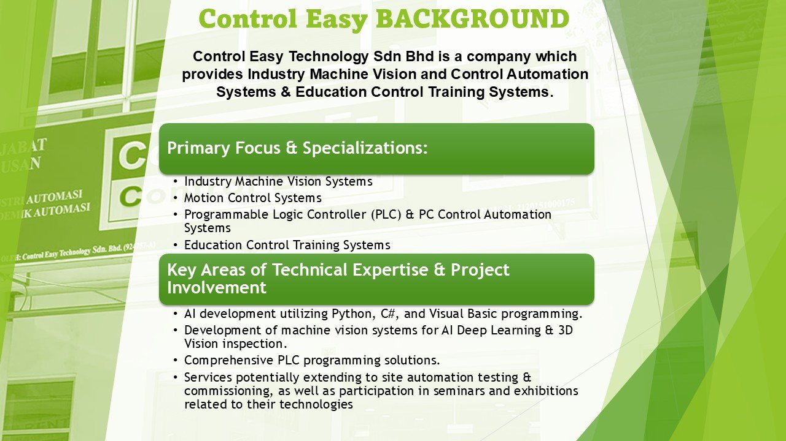
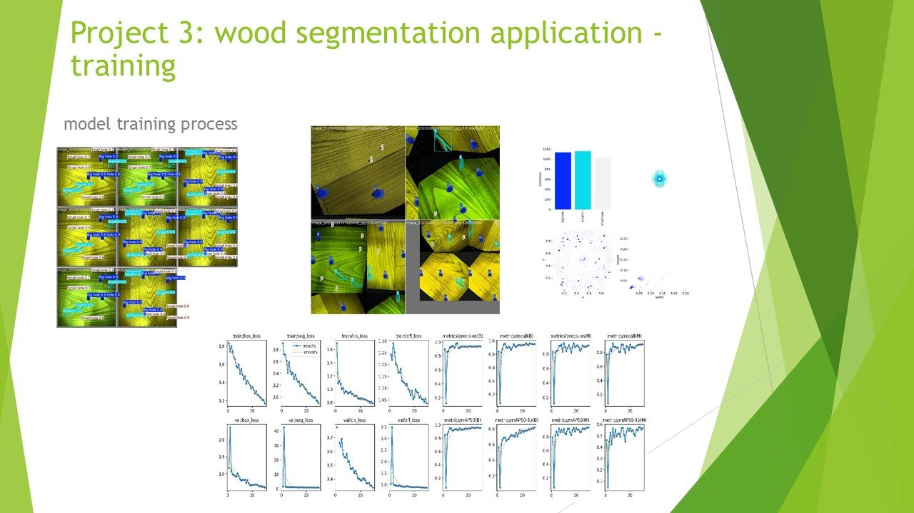
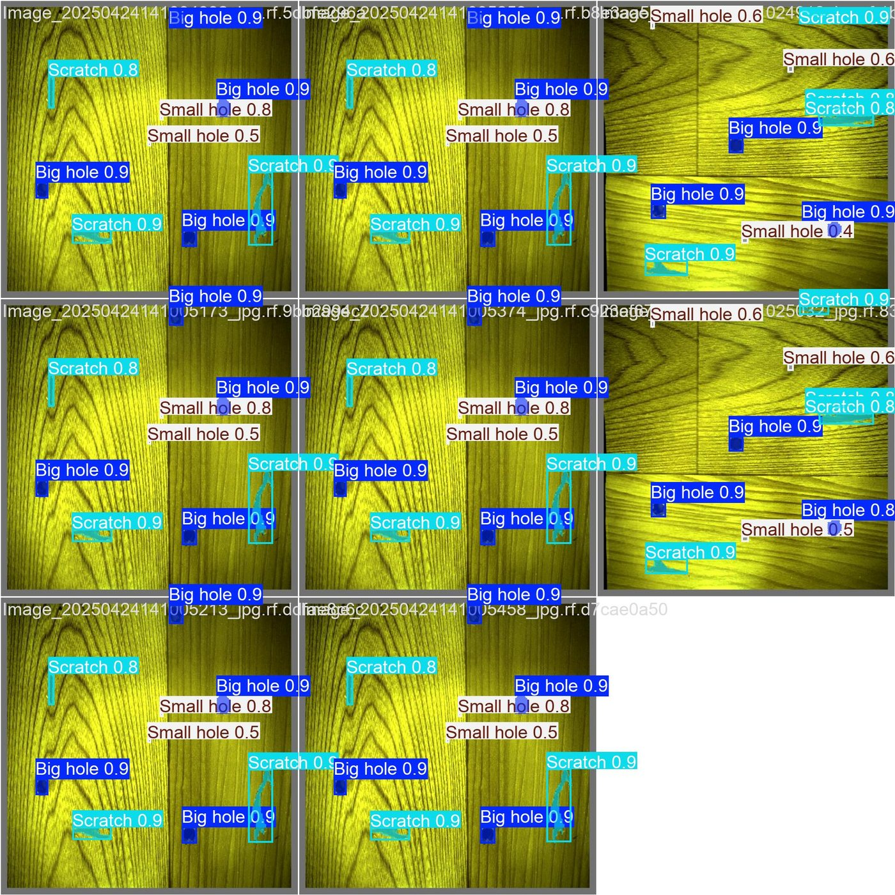
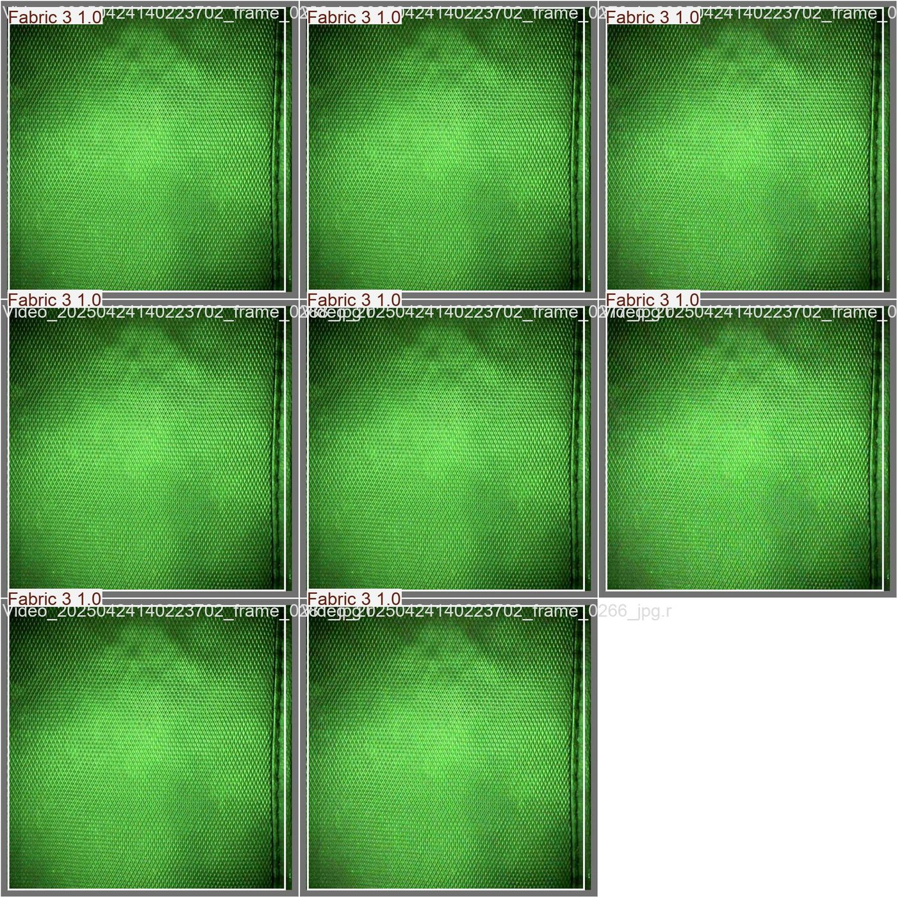

Electrical & Electronic Engineering Portfolio
Building practical systems across AI vision, automation, robotics, and power engineering.
I am a final-year Electrical and Electronic Engineering student at Asia Pacific University. My work connects hardware, software, control, power, and AI into tested engineering systems, from industrial machine vision to power protection studies and autonomous robot subsystems.
Machine VisionPLC AutomationPowerWorldMATLAB App Designer
ONNX RuntimeRoboflowJetson Orin NanoSimulink
YOLOv8PyQt5Relay ProtectionZED 2i
Machine VisionPLC AutomationPowerWorldMATLAB App Designer
ONNX RuntimeRoboflowJetson Orin NanoSimulink
YOLOv8PyQt5Relay ProtectionZED 2i
Industrial AI
Classification, object detection, segmentation, quality control, model testing, and deployment planning.
Automation
PLC exposure, sensor interfacing, Raspberry Pi, Jetson, ESP32, GUI testing, and Industry 4.0 workflow links.
Power Engineering
Power flow studies, IDMT relay settings, IEC/IEEE inverse curves, TCC plots, and microgrid simulation.
Experience
Practical engineering work with testing and documentation.
My internship connected university engineering knowledge with real systems. The work covered data preparation, model training, GUI testing, hardware interfacing, automation workflow support, and project documentation.
Mar 2025 - Jul 2025
R&D Project Engineer, Control easy
Developed and supported machine vision systems for industrial quality control. The work included fabric classification, PCB component inspection, wood defect segmentation, golf ball classification, GUI testing, hardware interfacing, PLC workflow integration, and technical manuals.
- Built a real-time golf ball quality control station using Raspberry Pi 5 and a Vision Transformer model.
- Interfaced a 24V industrial sensor with a 3.3V Raspberry Pi using a relay circuit.
- Prepared manuals covering dataset creation, training, GUI setup, hardware wiring, and testing.
Dataset
Collect, label, clean, augment, and organise images before training.
Model
Train classification, detection, and segmentation models using practical metrics.
Deploy
Test on PC or embedded boards, then connect the model with a GUI or sensor workflow.
Skills
Technical skills grouped by real engineering use.
Computer Vision & AI
OpenCV, Roboflow, YOLOv8, Vision Transformer, PyTorch, ONNX Runtime GPU, classification, detection, segmentation, annotation, and augmentation.
Embedded & Robotics
Raspberry Pi 5, NVIDIA Jetson Orin Nano, ESP32, Arduino, sensors, ZED 2i stereo camera, RGB-D sensing, LiDAR integration, and RFID access control.
Automation & PLC
Siemens S7-300, S7-200, S7-1200, TIA Portal SCL, PLC-controlled workflows, pneumatic circuits, and Industry 4.0 machine integration.
Power Systems
Power flow analysis, overcurrent relay coordination, IDMT relay settings, IEC/IEEE inverse curves, TCC plotting, fault analysis, CTs, and circuit breaker logic.
Simulation & Design
MATLAB, Simulink, MATLAB App Designer, LabVIEW, PowerWorld Simulator, SolidWorks, Dialux, LTspice, and Tinkercad.
Programming & GUI
Python, C, C++, C#, PyQt5, Streamlit, MATLAB GUI/App Designer, basic web tools, and IoT dashboard work.
Projects
Selected project evidence and engineering work.
Use the filters to view projects by domain.

Robotics + AIHospital Logistics AGV Vision System
Developed the vision subsystem using Jetson Orin Nano, ZED 2i camera, YOLOv8, Roboflow datasets, OpenCV, PyTorch, ONNX Runtime GPU, and PyQt5.

AI VisionAutomated Golf Ball Quality Control
Engineered an automated station using Raspberry Pi 5, sensor triggering, camera input, and a Vision Transformer model for real-time classification.

AI VisionPCB Component Inspection System
Developed an intelligent verification system using detection and segmentation to locate present components and logically deduce missing ones.

AI VisionWood Defect Segmentation
Built an instance segmentation application to outline scratches and holes on wood surfaces and support quality scoring.
Fabric Quality Control Systems
Created machine vision applications for fabric classification and object detection, deployed across PC and Raspberry Pi platforms.
Overcurrent Relay Coordination GUI
Developed a MATLAB App Designer tool for IDMT relay coordination, operating time calculation, TCC curves, system analysis, and validation reports.
Power Flow Analysis Using MATLAB and PowerWorld
Built and analysed a 10-bus system using Newton-Raphson, Gauss-Seidel, and Fast Decoupled methods, then studied voltage, flow, and losses.
Automated Bus Door Control
Developed a PLC and pneumatic circuit control system for bus doors, applying automation logic to a practical control task.
Off-Grid Wind Energy System
Designed a Simulink-based off-grid wind energy system to provide power for DC and AC applications.
E-Portfolio SWOT
Personal engineering development analysis.
This SWOT connects my CV, project experience, internship work, and professional development reflection.
Strengths
I have practical project experience in computer vision, AI, embedded systems, PLC automation, power systems, relay protection, and GUI development.
Weaknesses
I can still improve how I break down complex engineering problems and compare possible methods before selecting the final solution.
Opportunities
Final-year projects, AI vision certificates, protection studies, PLC exposure, simulation learning, and portfolio development can improve my career profile.
Threats
AI, automation, embedded systems, and power technologies change quickly, so I need to keep learning and manage my time well.
Education
Academic background.
Asia Pacific University of Technology & Innovation
Bachelor of Electrical and Electronic Engineering with Honours
2020 - Expected Graduation 2026Sama American School
American High School Diploma
2017 - 2019Contact
Send me a message.
The form prepares an email using your own mail app. The WhatsApp button opens a direct chat.